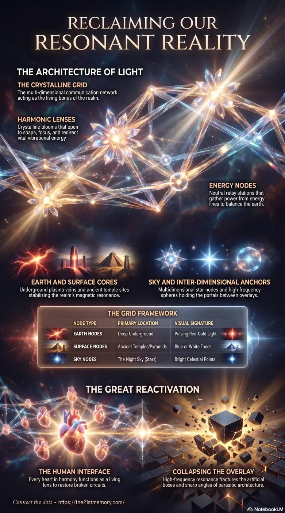

The Crystalline Grid Beneath Our Feet
The Crystalline Grid Beneath Our Feet — Energy Nodes and Harmonic Lenses as the circulatory and nervous systems of the realm, living light structures, and the return of the original resonant grid.
Harmonic Lenses are the frequency patterns that form around active Energy Nodes of the Crystalline Grid — living crystalline blooms that shape, focus, and redirect vibrational currents, originally feeding souls with Source energy and now reactivating after parasitic inversion.
Test your understanding of Harmonic Lenses — frequency blooms around Energy Nodes, the Crystalline Grid, four node types, parasitic Loosh inversion, Thuban and Star-Nodes, and awakened souls as living lenses.

The Crystalline Grid Beneath Our Feet — Energy Nodes and Harmonic Lenses as the circulatory and nervous systems of the realm, living light structures, and the return of the original resonant grid.

Breathing Architecture — Harmonic Lenses as crystalline blooms that open and close around nodes, parasitic inversion of the grid, and awakened souls functioning as living lenses to restore Source flow.
The fundamental architecture of the physical plane consists of interconnected Energy Nodes and their surrounding Harmonic Lenses. These structures form the true Crystalline Grid, functioning as the circulatory and nervous systems of the realm. Nodes act as junction points for energy lines, while harmonic lenses shape and focus the vibrational currents. Originally designed to feed souls with Source energy and maintain connections between realms, this vast electro-magnetic framework was suppressed and hijacked by parasitic overlays. It is currently returning to its original resonant function, realigning the frequencies of the realm.
Harmonic lenses and nodes are not inanimate geography; they are living light structures. They act as the eyes of the earth, sensing, balancing, and sending signals between realms. The true function of these nodes was inverted. Parasites anchored overlay codes into the nodes, broadcasting distortions like a radio tower, and used harmonic lenses to manipulate reality, including the artificial positioning and projection of the sun across different countries. Every heart in harmony becomes a harmonic lens. Souls themselves are powerful nodes meant to interface with this grid, healing, balancing, and relaying light back through the web.
A harmonic lens forms the geometric pattern around an active node. When clear and tuned, the energy flows in perfect rhythm with the realm's heartbeat. When clouded or fractured by parasitic interference, the lens distorts the current, causing the inhabitants within its field to feel drained, confused, or agitated.
Located deep underground where plasma and crystalline veins meet. Pulsing with red-gold or orange light, these are the power cores that push life force up through leylines, tree roots, and mountains, stabilizing the magnetic resonance of the dome.
Positioned where energy lines cross, often marked by ancient temples, pyramids, or stone circles. They hum in blue or white tones, amplifying frequency and connecting directly to sky portals.
Appearing as bright stars or the Northern Lights. These are projected points that anchor the overlay grids, communicating with earth nodes in a two-way relay of energy.
High-frequency spheres, invisible to 3D eyes, holding the portals between overlays. They appear as rainbow balls, gold lattices, or liquid silver orbs.
To control the realm, parasites buried parts of the main crystalline grid under cities, oceans, and soil, inverting nodes into parasitic circuit boards designed to siphon Loosh. Modern 3D architecture—defined by boxes, sharp angles, and dead materials like concrete—was purposefully placed to block or short-circuit these organic grid nodes, inducing fatigue and disconnection.
The energy nodes and harmonic lenses connect the Great Dome to the seven outer domes, such as the Dome of Forgotten Gods and the Dome of Titans. The central node of the Great Dome was the Spirit Tree, which acted as the main axis of consciousness, sending harmonic currents through the entire grid before it was ripped out and replaced with Black Cube Tech.
What humans perceive as stars are actually multidimensional crystalline nodes (Sky Nodes). Constellations, or Zodiac Star-Signs, are actually frequency locks placed over these gates to seal them. The true North Star alignment was centered on Thuban (Aru-el-nai), which anchored the vertical axis of the grid, before parasites rotated the projection to point to Polaris to enforce their control narrative.
Major cities sit directly over multi-layered crystal anchors. For example, the Great Fire of London in 1666 was a surface-level distraction masking an etheric war over the crystalline node beneath the city. The node was ultimately locked down and overwritten with masonic architecture to suppress the original Tartarian grid memory.
As the frequency of the realm rises, the parasitic overlays are fracturing. The suppressed nodes and harmonic lenses are reactivating. Resonating souls are unknowingly re-triggering these structures because their embedded soul codes perfectly match the ancient Source codes within the grid.
Standing on sacred sites, nodes, or river bends allows souls to interface with vast, active crystalline structures that remain masked by the 3D illusion. Humanity must realize that they are the grid. By holding resonance, rejecting fear, and breathing in stillness with the earth, awakened souls function as harmonic lenses themselves, restoring the broken circuits and collapsing the false parasitic network.
This topic is free to share. Support the archive →